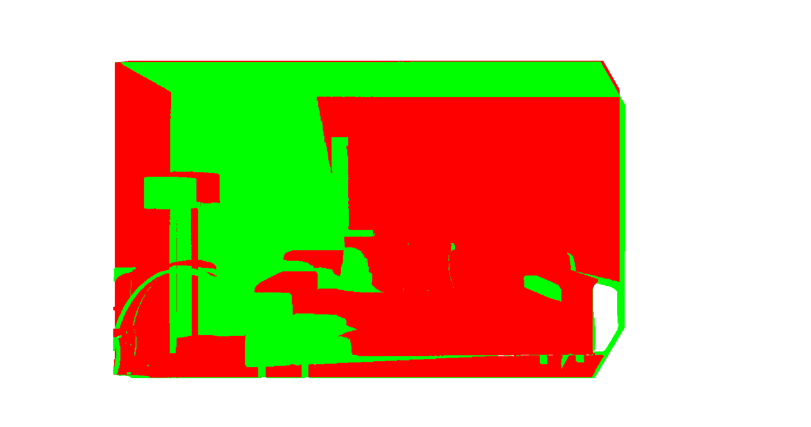
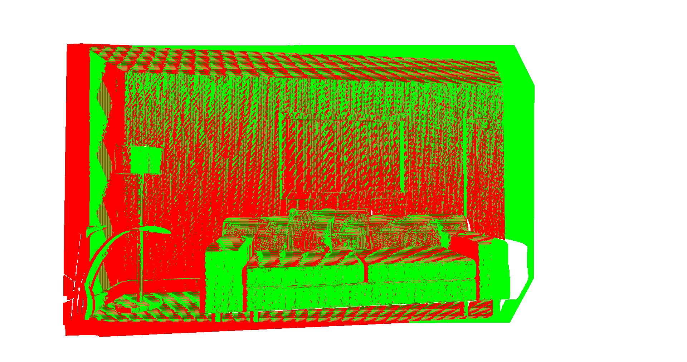
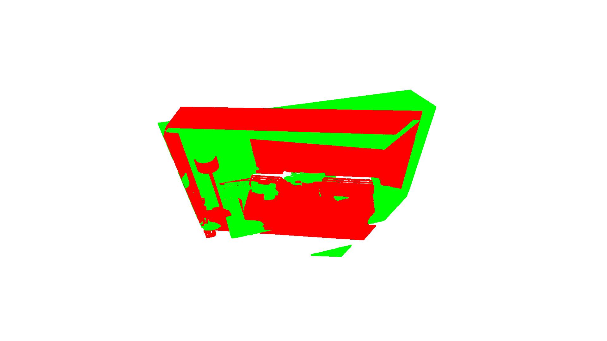
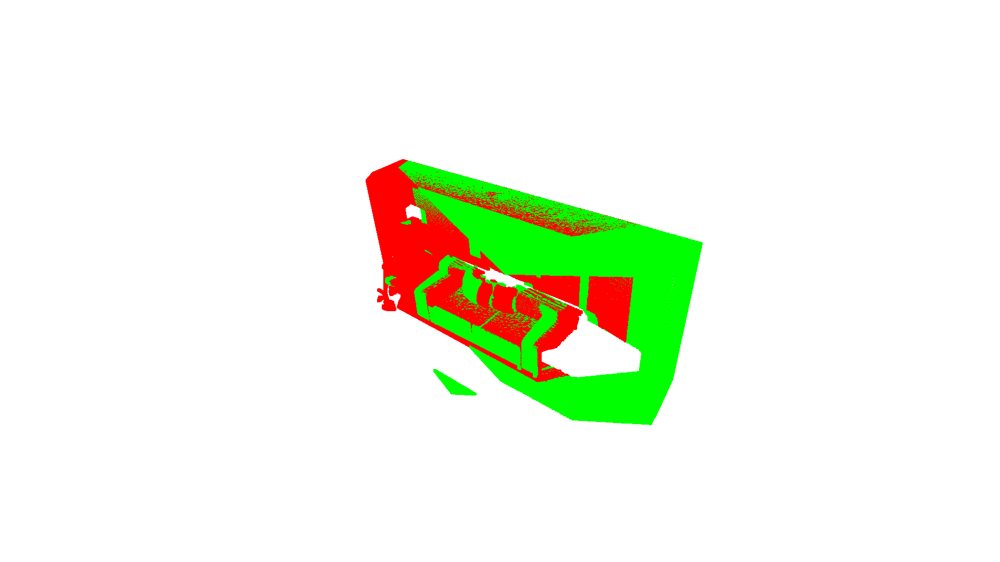
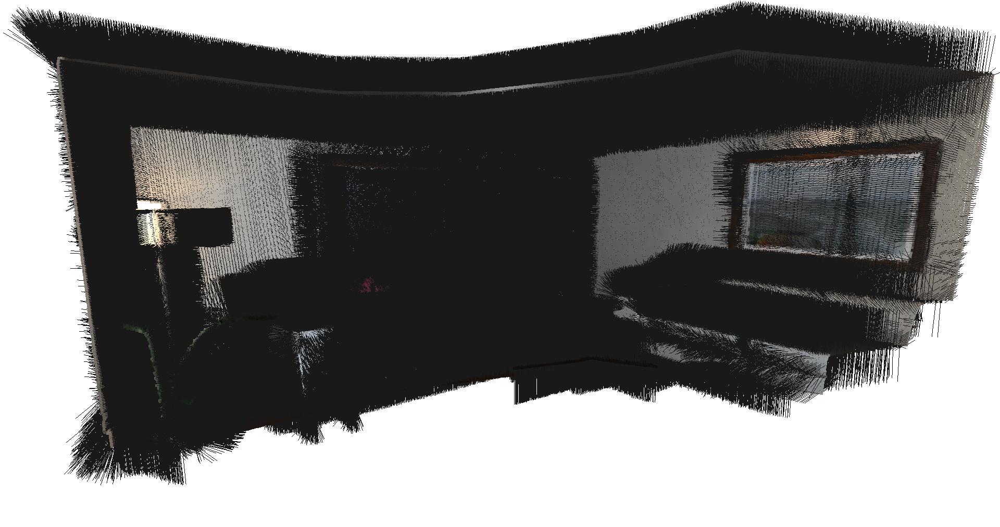
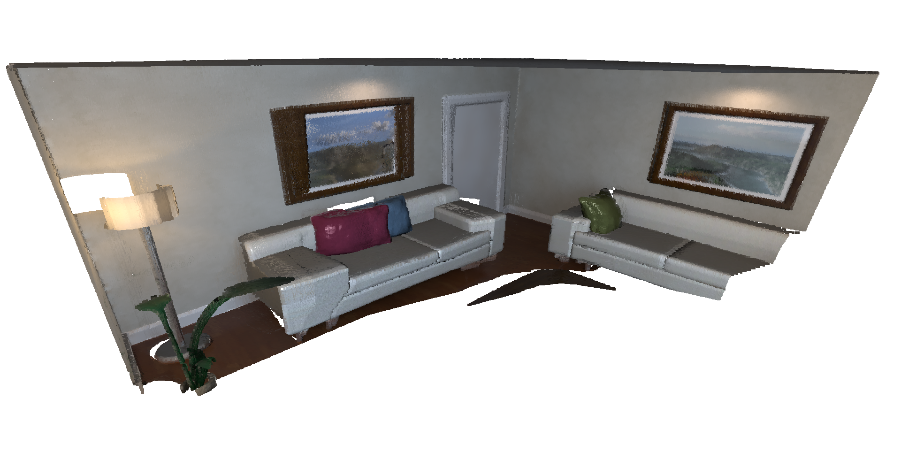
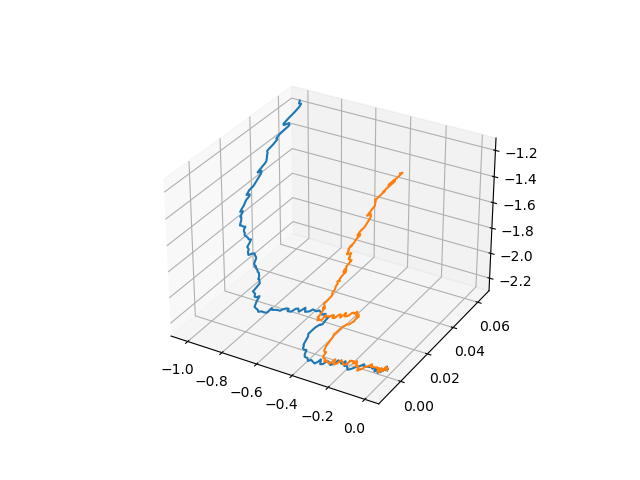

Mini project 4 · CMU 16-833
Mini project 4 · CMU 16-833
Dense SLAM with point-based fusion.
Building a dense RGB-D SLAM system end to end: point-to-plane ICP with projective data association for tracking, point-based fusion to merge each frame into a maintained map, and then closing the loop by tracking against that map instead of ground truth.
Two halves of a system
A dense SLAM system needs to answer two questions every frame: where is the camera now, and how does what it sees get folded into the map. This project builds both halves. Tracking comes from iterative closest point (ICP), which finds the rigid transform aligning the incoming frame to what we already have. Mapping comes from point-based fusion, which merges observations into a surfel map rather than accumulating every point forever.
Iterative closest point
Projective data association
ICP's inner loop needs correspondences between points, and the cheap way to get them is projective association: project a point into the other frame's image plane and take whatever lands at that pixel. That requires the projected coordinates and depth to be valid, so the first filter enforces
A second filter enforces |p - q| < dthr, and the reason is worth being precise about. Since p and q are projective nearest neighbors, they are near each other in the 2D image, but that says nothing about their separation along the camera's viewing direction. Two points can project to the same pixel while sitting metres apart in depth. The distance threshold is what makes them genuine nearest neighbors in 3D rather than just in projection.
Linearization and optimization
The objective is the point-to-plane error, minimizing the residual of each correspondence measured along the target's surface normal rather than straight-line distance, which converges much better on flat surfaces:
Linearizing the small rotation gives a residual linear in six parameters, three for rotation and three for translation, which stacks into a standard system solved by normal equations:
Where it works, and where it doesn't
Aligning frames 10 and 50 works cleanly. The two point clouds start visibly offset and converge onto each other.


Frames 10 and 100 are the interesting failure. The larger gap between frames means much larger initial misalignment, and it took 80 iterations to converge at all. Even then the result is not completely satisfactory, because ICP can converge to a local minimum: in this scene the pillows on the couch align with different pillows. The geometry is locally self-similar, the error is genuinely low at that wrong alignment, and nothing in the objective can tell the difference.
This is the known trade-off of the point-to-plane metric rather than bad luck. It converges faster than point-to-point when the clouds start close together, but its convergence basin is narrower, precisely because its zero-set is planar patches. Started far apart, it tends to oscillate or settle into a wrong minimum, which is exactly the regime a 90-frame gap puts it in.


Point-based fusion
Rather than appending every point of every frame, fusion merges new observations into existing map points using a running weighted average of position and normal, with the normals renormalized afterward:
Points that find no match get added as new map points, and points that fail the filters are discarded. Running this with ground-truth poses produces the reconstruction below, along with its normal map.


The final map holds 1,322,141 points at a compression ratio of 0.0867. That ratio is the point of the exercise: fusion keeps under 9% of the points a naive accumulation would produce, which is what makes dense mapping tractable at all.
Closing the loop
With both halves working, the full system replaces ground-truth poses with ICP-estimated ones. That raises a design question worth stating: which cloud is the source and which is the target? Here the source is the maintained map and the target is the input RGB-D frame. The map points are projected into the incoming frame's vertex map, filtered, and the resulting linear system solved for the transform.
It has to be this direction. The map grows continuously as points are added, so projecting the frame into the map risks wrong transformations from points caught in local minima. Theoretically flipping source and target would work for the initial iterations, while the map is still small, but not once it has grown.


The estimated trajectory tracks the shape of the ground truth while accumulating an offset, which is the expected signature of frame-to-model tracking without any loop closure to correct the drift.
References
- Keller et al., Real-time 3D Reconstruction in Dynamic Scenes using Point-based Fusion, 3DV 2013. The point-based fusion approach this project implements.
- Low, Linear Least-Squares Optimization for Point-to-Plane ICP Surface Registration, UNC Technical Report, 2004. The linearization used for the point-to-plane objective above.
- Chen and Medioni, Object Modelling by Registration of Multiple Range Images, Image and Vision Computing, 1992. Origin of the point-to-plane metric, and of its narrow convergence basin.